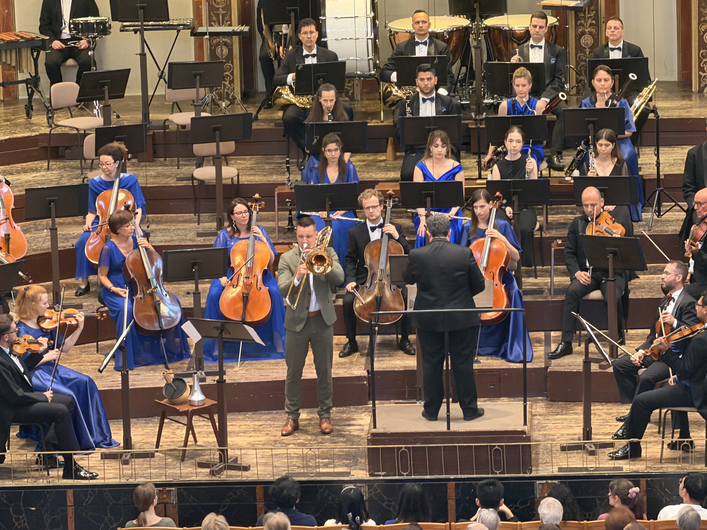
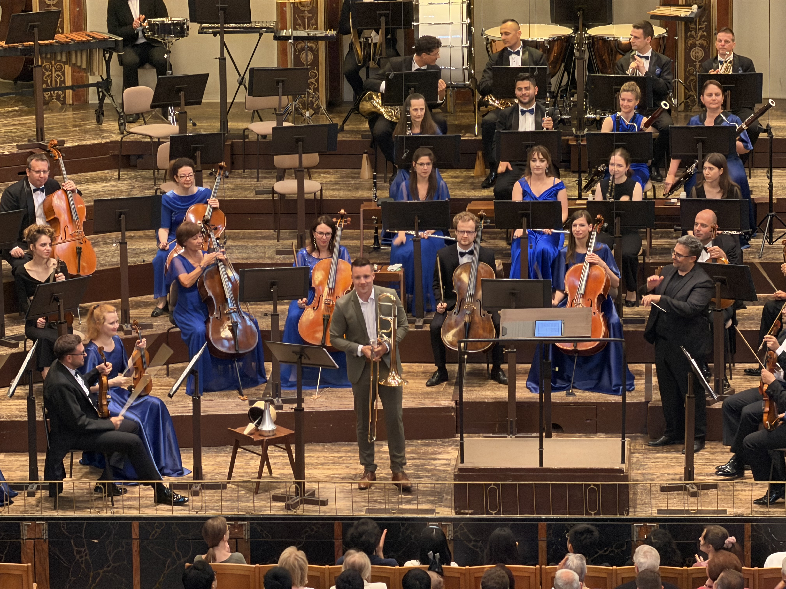
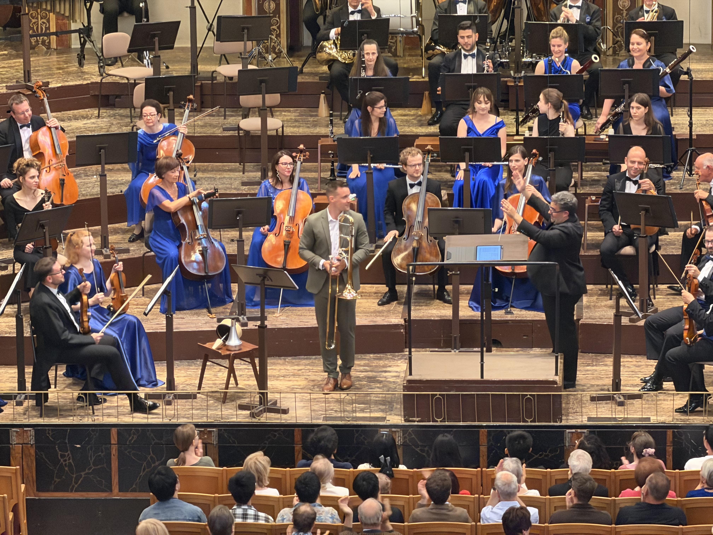

Vienna — The 58th Schwingungen Scholarship Concert, organized by IMK (Internationale Musik- und Kulturförderung), was held on June 5 at the Golden Hall of the Musikverein in Vienna, Austria. Presented in cooperation with the Gustav Mahler Private University for Music (GMPU), the concert was designed to provide outstanding young musicians with the opportunity to perform in one of the world's most prestigious concert halls.

This scholarship concert represented a meaningful international collaboration connecting higher music education with a global performance platform, creating valuable professional opportunities for the next generation of artists.
The Hungarian State Symphony Orchestra of Szolnok, under the baton of Spanish conductor Manuel Tévar, accompanied the evening. The featured soloist was young trombonist Martin Felsberger, a GMPU graduate, who performed Henri Tomasi's Trombone Concerto with a rich tone, refined musicianship, and remarkable technical assurance. His performance blended naturally with the orchestra, revealing the expressive capabilities of the trombone while taking full advantage of the renowned acoustics of the Golden Hall.

Born in 2000, Felsberger graduated from GMPU in 2025 and was appointed Principal Trombone of the Kärntner Sinfonieorchester in the same year, emerging as one of Austria's promising young musicians.
In the program book, GMPU President Roland Streiner described Felsberger as “a representative young musician who demonstrates the educational achievements of our university,” emphasizing that IMK's partnership provides students and graduates with invaluable stage experience in internationally renowned concert halls.

Founded in 1991, IMK has continuously promoted international cultural exchange through music. The Schwingungen Scholarship Concert has become one of its flagship programs, connecting educational institutions worldwide with international performance opportunities for emerging artists. This concert once again demonstrated the value of an international model that bridges music education with professional performance while supporting the artistic growth of the next generation.